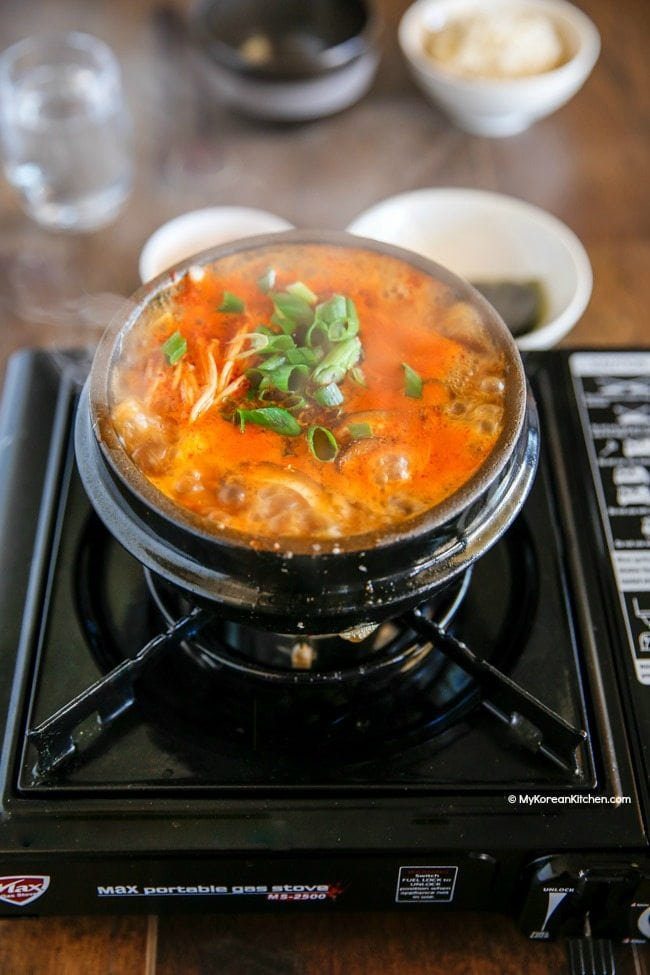

Sundubu-Jjigae

Description
Sundubu jjigae is a Korean stew made with soft (uncurdled) tofu as a highlight ingredient.
There are a few different ways to make sundubu jjigae using different ingredients (e.g. kimchi, minced pork and seafood) but by far my favorite version is the seafood version known as Haemul Sundubu Jjigae (해물 순두부 찌개). You can really taste the refreshing and clear tasting soup.
Ingredients
Main
350g/12 ounces Korean soft tofu (sundubu)
1 egg
250g of meat of your liking (Pork Belly is recommended)
100g mushrooms of your liking (Shitake or Enoki are recommended)
Soup Base
2 Tbsp Korean chili powder or Korean chili flakes (gochugaru)
1.5 cups dried kelp and anchovy stock
1 Tbsp Korean chili oil or neutral cooking oil
A dash (about 1/2 tsp) of sesame oil
1/2 Tbsp Korean fish sauce
* 1 tbsp = 15ml
Steps
- Start heating the pot on the stove over medium low heat and add the chili oil, chili powder, and garlic. Stir them well for about 1 min. Make sure not to burn the chili powder.
- Add the pork belly and stir quickly to coat them with the chili sauce. Add the fish sauce then stir.
- Add the dried kelp and anchovy stock and boil it on medium-high heat until it starts to boil rapidly (2 to 3 mins).
- Add the tofu, mushrooms, and egg and cook them for another 2 to 3 mins. Season with salt, if required.
- Top up with the green onion, black pepper and sesame oil. Serve hot with Korean rice and side dishes (banchan).